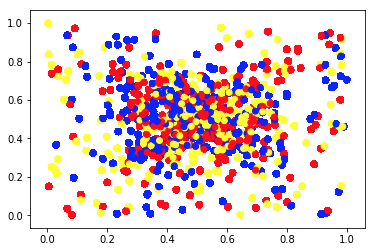
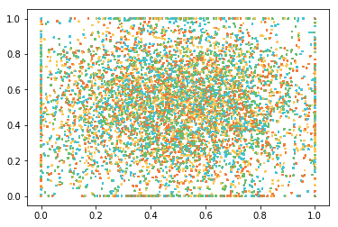

During a local lecture in the DSI Atlanta class, our instructor provided a link to an algorithmic art website produced by Tyler Hobbs in Austin. I immediately fell in love with the visualization of random functions at: TylerHobbs
Very quickly, I started wondering what I could do along the same lines. I decided to play around with scatterplots in python. I wanted to visualize a distribution that was weighted in the center, made up of a few colors, and have (x,y) bounded by the ranges [0,1] for both x and y.
My first attempt was clumsy, but hey, I’m new to all of this:
After some digging into matlibplot, pyplot, and scatterplots in Python, I refined the parameters, got a much more appropriate distribution, selected better colors, and improved the efficiency of my little program so that it could easily run 100,000 scenarios. I’m quite happy with the result:
And then I thought I would try one more time with smaller points on the plot and making the light blue color twice as likely to occur as each of the other colors. I also wanted a dark blue background. After doing several versions, noticing another inefficient part of my programming, I ended up with this plot.

This was a very easy task that seemed daunting at first. I didn't have an firm grasp on Python (not even the basics) and so each step seemed monumental. But in the end, the lines of code to generate this graph of 5 million pixels was pretty easy: Define a few colors, take two (large) samples from a normal distribution, figure out how to turn off the x and y tick marks, and plot those observations on a figure.
Update September 12:
I went back to the Python code that generated the original graphs for this blog post. I wanted to play around with squares and circles that were bounded. I made a mistake in some of my math and generated this cool circle within a circle.